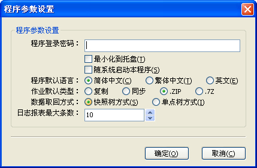

点击“设置”菜单中的设置选项则出现下面的设置选项对话框：

登录密码如果为空，则清除原来的密码。下次启动时则不会指示输出密码，默认没有密码。
最小化到托盘是指当最小化程序时最小化到托盘中。
随系统启动选项，则在系统安装一个启动选项，使系统启动后启动本程序。
改变默认语言选项需要重启程序。
默认作业类型可以指定创建作业时默认选项的的类型，不需要每次都需要更改。
快照树方式，请参考
这里
。
报表及日志的条数限制，最大为1000条。